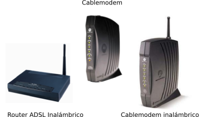
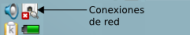
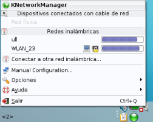
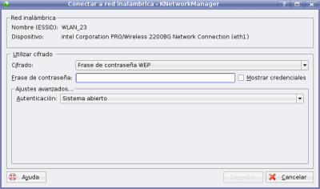
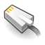

Configuración de red
Conectando mediante una red inalámbrica:
Configurar tu conexión a internet no debería suponer demasiados problemas si dispones de una conexión ADSL o por Cable mediante router o cablemodem. Si utilizas otro tipo de conexión, mira la página de soporte, donde encontrarás páginas que pueden contener la información que necesitas, o pedir ayuda vía foros o chat. En la imagen puedes ver algunos ejemplos de cablemodems y routers:

Si tienes un router o un cablemodem con soporte para red inalámbrica, sólo tienes que hacer clic en el icono de conexiones de red:

Aparecerá un menú comoo el que sigue con una lista de las redes inalámbricas disponibles. Normalmente, la que tenga mayor calidad de señal debería ser la correcta. La calidad de señal la indican las barras azules a la derecha del nombre de la red inalámbrica.

Normalmente, la red tendrá encriptación para evitar accesos no deseados, por lo que tendrás que introducir una contraseña. Esta contraseña debería figurar en la parte baja del router / cable modem, o en la documentación que te haya entregado tu proveedor de acceso a internet.

Una vez introducida, se habilitará el botón de aceptar, y si es correcta, ya estarás conectado a internet.
Principales aplicaciones
Mozilla Firefox
Navegador web predeterminado en Bardinux
Mozilla Thunderbird
Thunderbird es un cliente de correo electrónico POP3
Kopete
Kopete es un cliente de mensajería instantánea, que permite conectarse a una gran variedad de servicios (Jabber, MSN Messenger, Google Talk, etc)
Configuración de Internet
Configuración de red
Aquí encontrarás información sobre como conectarte a otros ordenadores o a Internet, mediante una tarjeta y un cable red.
Configuración de red inalámbrica
Aquí encontrarás información sobre como conectarte a otros ordenadores o a Internet, mediante una conexión inalámbrica (Wi-fi).